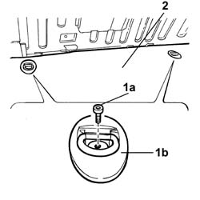
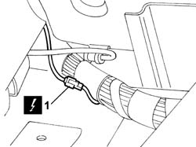
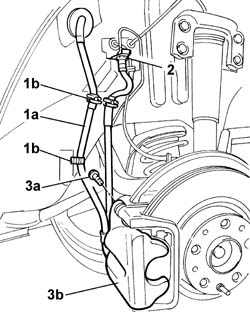

3310B36 REAR BRAKE CALIPER (one), left or right - R.R.
- Path
- Procedures > 33 BRAKES > 3310 DISC BRAKES > 3310B REAR DISC BRAKES > 3310B36 REAR BRAKE CALIPER (one), left or right - R.R.
- Kind
- repair procedure (removal / refitting; the operation number is the code)
- Applies to
- all engines; all production periods
- Interactive page
- https://sloeber94.github.io/elrnDB-lThss/en/#/78536
Applies to: all engines; all production periods
 Removing
Removing
 Refitting
Refitting- Position the vehicle on a lift.
- Disconnect the negative battery terminal.
- Open the boot lid and disconnect
1. Undo the fixing bolts (1a) and remove the two belt holder hooks (1b).
2. Fold over the rear section of the spare wheel housing floor covering.

Applies to: all engines; all production periods
1. Disconnect the electrical connection.
 | Description | Connector |
|---|---|---|
1 | Left rear/brake caliper coupling | D033 |
| Description | Connector |
|---|---|---|
1 | Right rear/brake caliper coupling | D034 |
- Release the wiring for the retaining springs.

Applies to: all engines; all production periods
- Raise the lift.
See in Op. 4450B11 Rear WHEEL (one) - R.R.
See in Op. 7055B45 Right rear wheel arch liner - R.R.
1. Release the wiring (1a) for the retaining springs (1b).
2. Undo the connector securing the rigid pipe to the flexible pipe for the brake caliper and disconnect it.
3. Undo the bolts (3a) and remove the brake caliper assembly (3b).

Applies to: all engines; all production periods
Refitting
Removing- Fit the rear brake caliper and tighten the fixing bolts.
- Tighten the bolts fixing the brake caliper to the bracket to torque.
 | Value - daNm | Fastening | Component | Ø |
|---|---|---|---|---|
. | 6,2 | Bolt | REAR BRAKE CALIPERS COMPLETE | M10X1.25 |
- Connect the connector securing the rigid pipe to the brake caliper flexible pipe.
| Value - daNm | Fastening | Component | Ø |
|---|---|---|---|---|
. | 1.4 | Connector | BRAKING SYSTEM PIPE BRAKES | M10 |
- Reposition the wiring and secure it using the retaining springs.
See in Op. 7055B45 Right rear wheel arch liner - R.R.
See in Op. 4450B11 Rear WHEEL (one) - R.R.
- Lower the lift.
- Connect the electrical connection in the luggage compartment.
| Description | Connector |
|---|---|---|
. | Left rear/brake caliper coupling | D033 |
| Description | Connector |
|---|---|---|
. | Right rear/brake caliper coupling | D034 |
- Reposition the floor covering in the luggage compartment.
- Fit the belt holder hooks tightening the fixing bolts.
- OP. 0010T64
- OP. 0010T65
- Connect the negative battery terminal.
- Remove the vehicle from the lift.
Topics linked from this page (2)
Topics that link to this page (7)
- F01 POOR BRAKING ACTION
- H02 DRIFT WHILST BRAKING
- 3310B34 REAR BRAKE CALIPERS - R.R.
- 3310B59 Rear brake DISC GUARD (one), left or right- R.R.
- 4420B34 Rear suspension TRACK CONTROL ARM, left or right - R.R.
- 4440K40 Rear suspension COIL SPRING - R.R.
- 4450D15 Rear wheel hub STUB AXLE, left or right - R.R. Including replacement of bush, if necessary